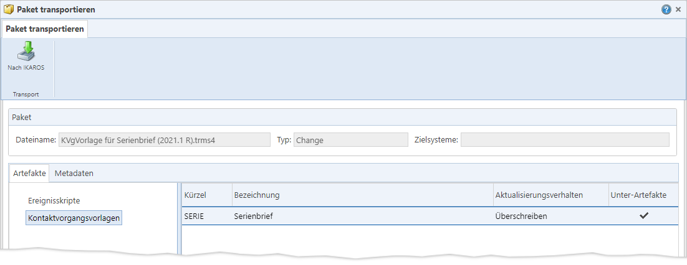

Sie können über den Menüpunkt „Pakete“ jeweils eine
lokal gespeicherte „.trms4“-Paketdatei durch Klick auf die Schaltfläche
„Nach
IKAROS“ in ein oder mehrere IKAROS-Zielsysteme übertragen und
die im Paket enthaltenen Artefakte dort installieren.
Nach dem Hochladen der Paketdatei erscheint zunächst ein
Dialog mit einer Übersicht aller in der Paketdatei enthaltenen Artefakte. Zudem
müssen Sie in diesem Dialog vor dem Start des Transportprozesses die Zielsysteme
festlegen [Link].
Die trms4-Paketdateien werden vom Client zunächst auf den
TRMS-Web-Server hochgeladen und von dort an den TRMS-Anwendungs-Server
weitergereicht.
Übersicht der Artefakte in der
Paketdatei

Abb. 27: Dialog mit der Übersicht der Artefakte vor dem
Transport einer lokalen „.trms4“-Paketdatei
Der Dialog bietet eine schreibgeschützte Übersicht der
Artefakte/Changes, die bei der Zusammenstellung des Artefaktpakets explizit als
„Ausgewählt“ markiert wurden.
Beachten Sie hierbei:
Wenn zu den Artefakten noch Unter-Artefakte gehören (die je nach
Transportvorgaben eventuell mit ins Paket aufgenommen wurden), sind diese hier
nicht
zu sehen. Sie werden jedoch, falls notwendig bzw. möglich, mit im Zielsystem
installiert.
Hinweis: Änderungen
an der Zusammenstellung oder den Transportvorgaben sind in diesem Dialog nicht
mehr möglich. Falls es sich um eine separate Paketdatei handelt, müssen Sie das
Paket komplett neu zusammenstellen, wenn Sie Änderungen vornehmen möchten. Wenn
das Paket hingegen aus einem Change/einem Change Set erzeugt wurde, können Sie
die Zusammenstellung und Transporteigenschaften im jeweiligen Menüpunkt
aufrufen, bearbeiten und die dazugehörige Paketdatei neu generieren.
|
Symbol |
Schaltfläche |
Beschreibung |
|

|
„Nach
IKAROS“
[Strg] + [i] |
Öffnet zunächst einen Dialog zur Auswahl der
Zielsysteme und startet anschließend die Übertragung der Artefakte und
deren Installation in die Ziel-Systeme. Wenn mehrere Zielsysteme
ausgewählt sind, erfolgt der Transport sequenziell nacheinander.
Beachten Sie, dass die Oberfläche in dieser
Browser-Registerkarte bis zum Abschluss gesperrt bleibt. Während dieser
Zeit wird ein Wartedialog angezeigt. Erst bei Abschluss des Transports
erhalten Sie eine Erfolgs- bzw. Fehlermeldung.
Das dazugehörige Protokoll können Sie im Anschluss im
Menüpunkt „Transportprotokolle“ aufrufen. |